A private thinking tool for the AI age
Own your
thinking.
Enliner keeps your notes, calls, and know-how on the Mac in front of you, and runs its AI there too, so your work stays yours: plain files you keep, on hardware you own. You buy it once, with no account, no cloud, and no subscription.
Built in the open · Not on sale yet · macOS 26+ · Apple Silicon
-
01
It runs
on your MacEnliner captures, transcribes, and summarizes your calls and voice memos on the machine in front of you. Nothing is uploaded, and none of it trains a model. You can check that for yourself: turn on airplane mode, and everything still works.
-
02
A place to
actually thinkIt is an outliner built around pages, links, and a graph that tie your knowledge together. Calls and voice memos are one way things get in; what you build out of them over months and years is the actual point.
-
03
Yours
to keepYou buy Enliner once, and it keeps running whether or not you keep paying. Your knowledge lives in plain Markdown you will still be able to open in ten years, with or without the app, so you can walk away any time and take all of it with you.
Product
See it working.
Enliner is a real, running app. Here is what it looks like doing the things you would actually use it for, captured from the Mac it runs on.
An outliner that stays out of your way
Every line is a block you can fold, nest, tag, and link. Pages connect with wikilinks, tasks live right in the text, and all of it is plain Markdown sitting in a folder you own.
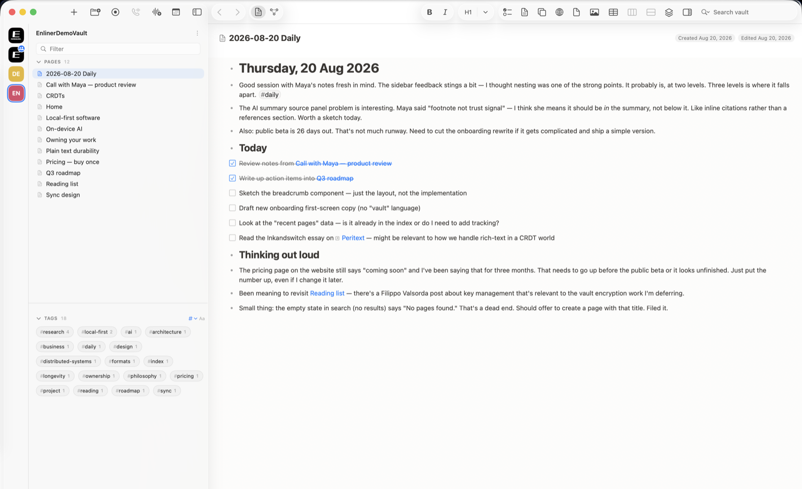
Record a call and keep the whole thing
Enliner records the audio, transcribes it speaker by speaker, and drafts a summary, all on your Mac. The recording, the transcript, the summary, and your notes end up on one page that is yours to keep.
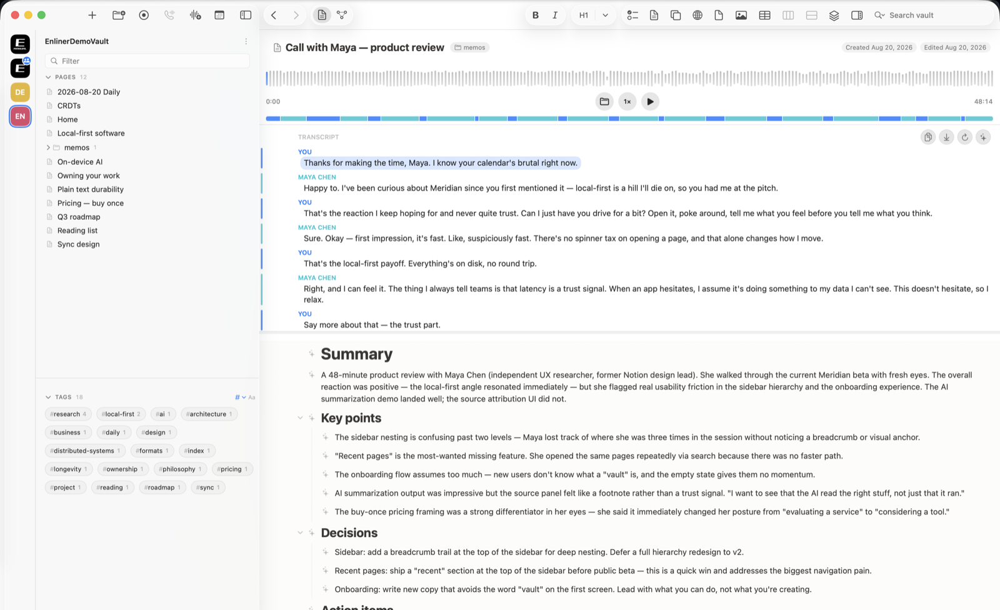
A transcript you can actually work with
Click any line to jump to that second of audio. A ribbon along the top shows who was talking when, and the whole transcript stays selectable, searchable, and yours to copy anywhere.
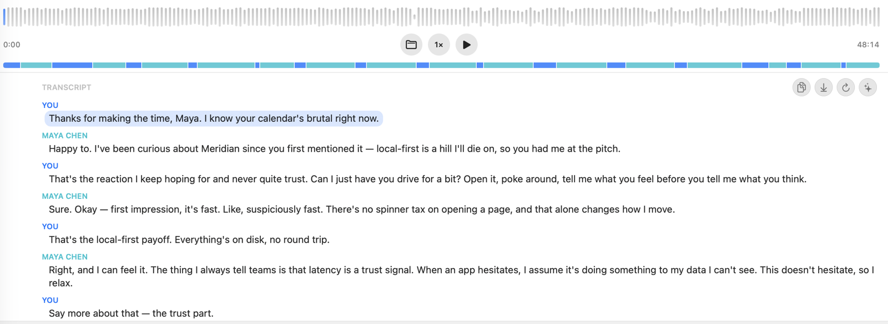
A summary written on your own machine
A local model reads the call and drafts the summary, the key points, the decisions, and the action items. Every block the AI wrote carries a small mark, so you always know what came from the model and what came from you.
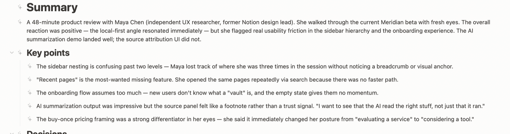
Notes stamped to the moment you took them
The lines you type while recording are timestamped against the audio. A note you jotted at 03:49 takes you straight back to what was being said.
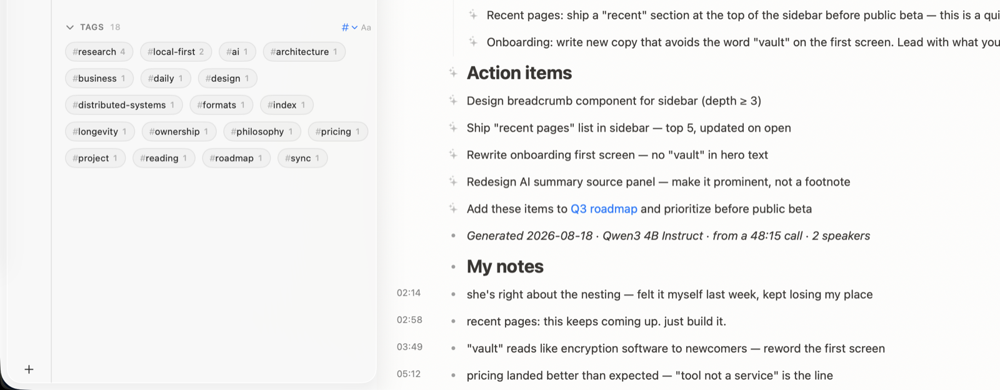
Start recording in a keystroke
Capture a voice memo or a call straight from the toolbar. Pick the source, hit record, and take notes while it listens.
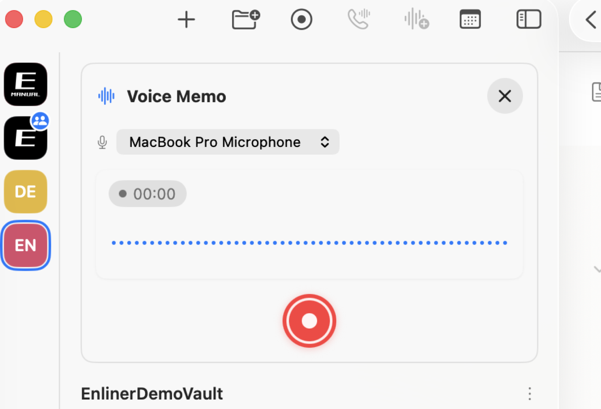
Ask your own notes
The assistant runs a local model over your vault. Ask a question and get an answer grounded in your pages. Nothing is uploaded, and nothing trains a model.
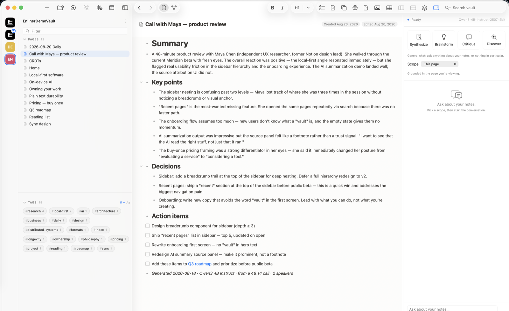
See how your thinking connects
Every page is a node and every link an edge. The graph is built from your vault as you work, so the shape of what you know is always there to walk through.
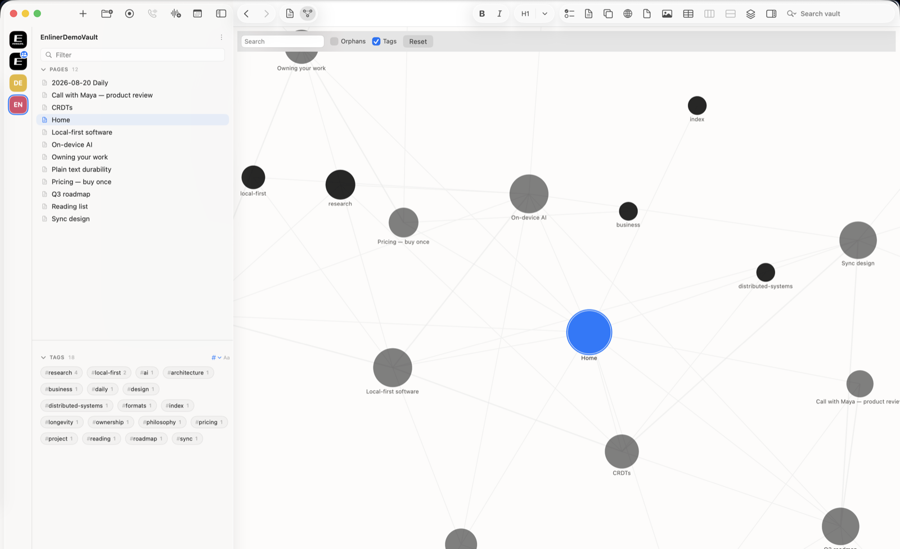
Every mention finds its way back
Link to a page from anywhere and it appears in that page's linked references on its own. Your notes cross-reference themselves as you write.
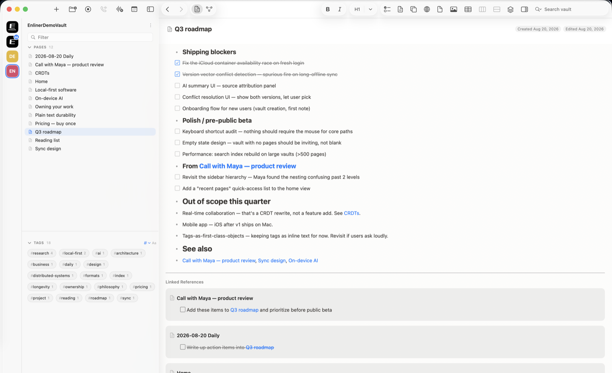
Plans, tables, and tasks in one place
Tables, checklists, and properties live in the same document as your writing. A roadmap, a set of meeting notes, and a to-do list are all just pages.
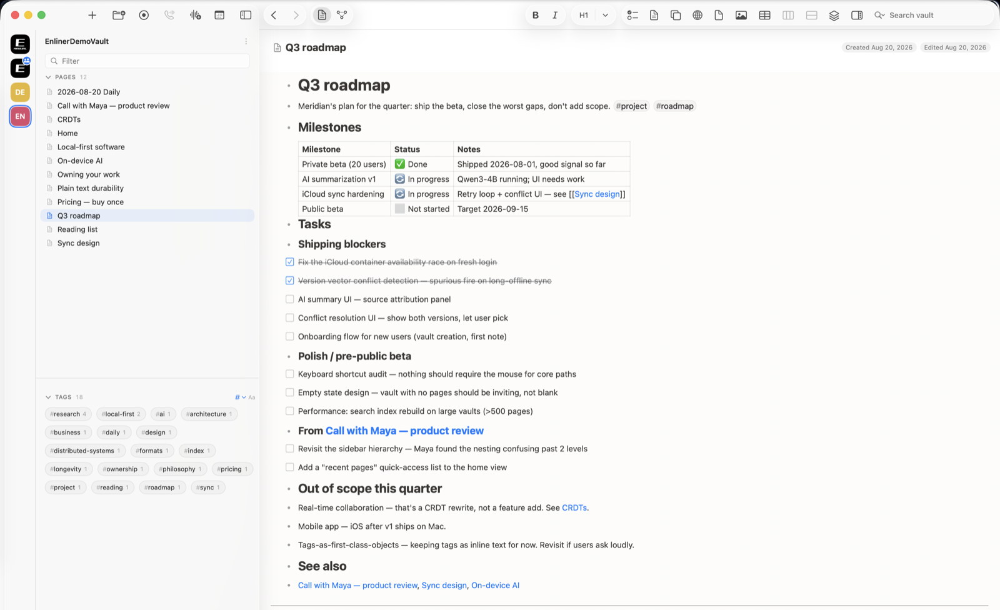
Keep a map of everything
Build a home page that links out to the work, and let the sidebar, the tags, and the graph carry you the rest of the way.
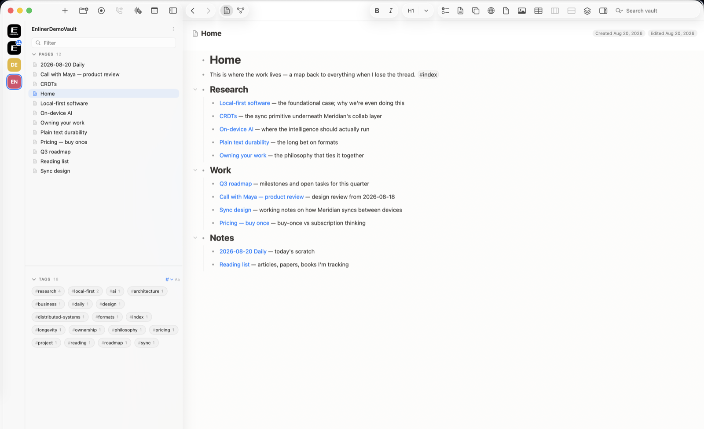
Collaboration
Share it without
giving it away.
Enliner can go multiplayer one vault at a time. Two people edit the same outline live, anything you change offline merges cleanly once you reconnect, and the vault stays plain Markdown the whole way through.
Real-time, offline-first
A movable-tree CRDT (Loro) merges everyone's edits with no central authority deciding who wins. Work on a plane, reconnect, and it reconciles on its own.
A relay you can run
Sync moves through a small relay written in Rust that forwards sealed bytes and never sees your text. You can host it yourself on hardware you control, down to a Raspberry Pi on your own network.
End-to-end encrypted
Everything on the wire is sealed to keys only the members hold, so even the relay carrying your vault around cannot read a word of it.
The technical version lives on the tech page.
One price, then it's yours
Own it once.
Yours for good.
Enliner
$30once
Add $20 a year only if you want newer builds. Three years comes to $70 at most, and it stays yours, offline, for good.
Cloud AI subscriptions
$216a year, forever
Around $648 over three years, and it never stops. Your notes and conversations sit on servers you don't control.
The idea behind it
Computing should happen
on hardware you own.
Enliner is one answer to a larger question: as the cloud moves to meter every bit of computation, where should it actually run? Code got cheap enough that one person can build a serious tool, which means we no longer have to accept the ones we are handed. The full argument, and an honest account of what Enliner is and is not, lives on its own page.
Built in the open
Follow the build.
Get early access.
Enliner isn't on sale yet. Leave your email and I'll tell you when the first build is ready. No spam, no list-selling, and you can unsubscribe any time.
Prefer email? Write to hello@enliner.net.